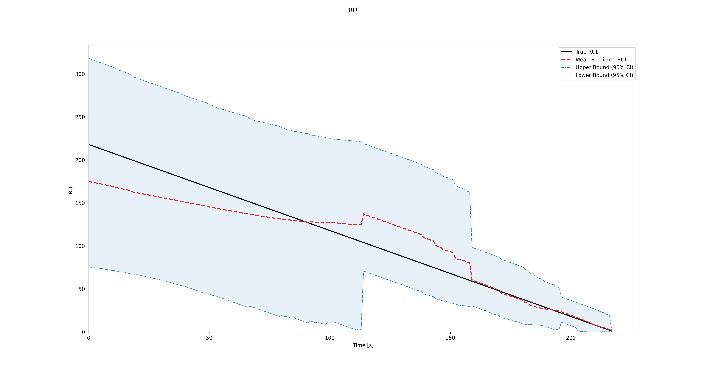

Quick Start Guide: Prognostics using C-MAPSS
This guide provides a step-by-step process for loading the C-MAPSS dataset, creating a Hidden Markov Model (HMM) and a Hidden Semi-Markov Model (HSMM), and performing prognostics using your model.
Warning
This example will NOT run with the PyPi install, since the package does not contain the example data. To get all of the required files, please build the entire GitHub repository, following the respective instructions.
{kind=link}
{kind=link}
Using a More Advanced Model: HSMM
The C-MAPSS data might be too complex for an HMM. To improve predictions, we can use a Hidden Semi-Markov Model (HSMM).
Step 1: Create Your HSMM
An HSMM works similarly to an HMM, but states last for varying durations instead of transitioning at each step. Unlike HMMs, HSMMs don’t need predefined observation symbols. However, they require n_durations, which is the maximum duration each state can have.
hsmm_c = GaussianHSMM(n_durations=200, f_value=f_value, obs_state_len=obs_state_len)
Step 2: Optimize the Number of States and Train Your Model
Similar to the HMM, you can use the fit_bic method to optimize the number of states using the BIC criterion.
hsmm_c.fit_bic(seqs_train, states=list(np.arange(2, 7)))
Step 3: Perform Prognostics
With the trained HSMM, perform prognostics:
hsmm_c.prognostics(seqs_test, plot_rul=True, get_metrics=True)
By using HSMMs, you’ll likely see improved RUL predictions compared to HMMs! For the C-MAPSS, the RMSE improves, and the uncertainty confidence intervals reduce over time.
{kind=link}
How to load your own dataset
If you want to use your own dataset with HiMAP for prognostics, you can do so using the auxiliary function create_data_hsmm() provided in utils.py. This function prepares your data in the correct format for training and testing HMM or HSMM models.
Step 1: Prepare your data files
Each run-to-failure trajectory must be stored in a separate CSV file. Every CSV file should contain a column named clusters, which represents discrete condition monitoring data (or cluster labels) sampled at a consistent rate.
For example, a single CSV file might look like:
clusters
1
1
2
2
3
...
21
Step 2: Understand how the data is processed
The create_data_hsmm() function takes a list of CSV file paths as input. For each file, it:
Reads the clusters column
Stores each trajectory as a list of observed states in a dictionary
To standardize the end-of-life behavior across trajectories:
A predefined failure value (f_value) is appended to the end of each trajectory
This failure value is repeated obs_state_len times to help the model learn the failure pattern more effectively
In addition, the function handles indexing automatically:
If your data is zero-indexed (states start at 0), cluster labels are shifted by +1 internally to ensure compatibility with HMM and HSMM implmentations.
This behavior is enabled by default (is_zero_indexed = True)
If your data is already one-indexed, this adjustment can be disabled by is_zero_indexed = False
Step 3: Load your training and testing data
First, collect all CSV files for training and testing into separate folders. Then, create a list of file paths and pass them to create_data_hsmm().
from utils import create_data_hsmm
import os
# Define parameters
f_value = 21 # Failure value appended at the end of each trajectory
obs_state_len = 5 # Number of times the failure value is repeated
train_folder = 'path/to/your/train/folder'
test_folder = 'path/to/your/test/folder'
# Read all CSV files in the train and test folders
train_files = [
os.path.join(train_folder, f)
for f in os.listdir(train_folder)
if f.endswith('.csv')
]
test_files = [
os.path.join(test_folder, f)
for f in os.listdir(test_folder)
if f.endswith('.csv')
]
# Create training and testing trajectories
seqs_train = create_data_hsmm(train_files, f_value, obs_state_len)
seqs_test = create_data_hsmm(test_files, f_value, obs_state_len)
The resulting seqs_train and seqs_test objects are dictionaries containing run-to-failure trajectories in a format directly compatible with HiMAP’s HMM and HSMM models.
You can now use these datasets for model training and prognostic evaluation as demonstrated in the previous sections.